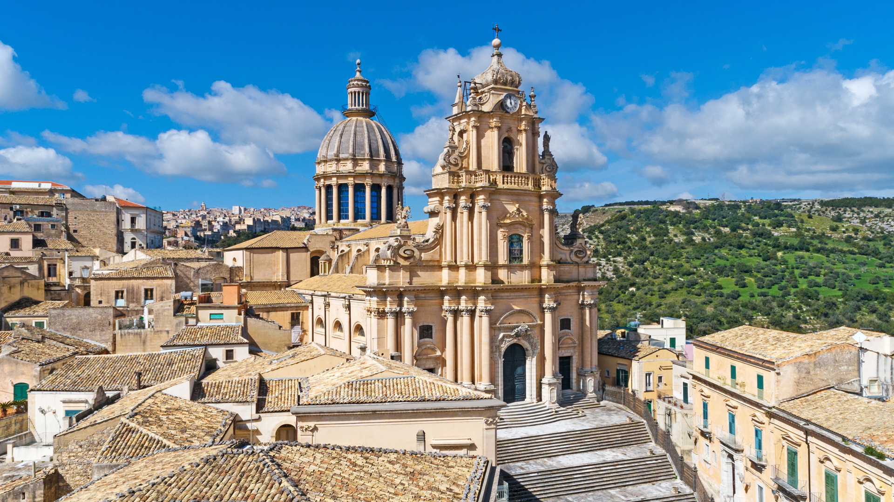

DUOMO DI SAN GIORGIO
Il capolavoro di Rosario Gagliardi
Monumento simbolo del barocco ibleo, il Duomo domina la piazza dall'alto di un'imponente scalinata di 54 gradini. La sua superba facciata a torre, la maestosa cupola neoclassica e le eleganti vetrate lo rendono una delle opere architettoniche più straordinarie della Sicilia sud-orientale.